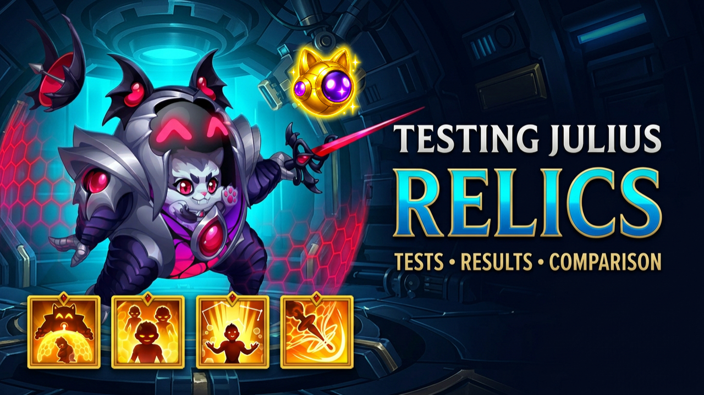

WITHOUT RELICS
Julius struggles to finish
In the previous version of the matchup, Julius could struggle to eliminate Iris before the available battle time expired. The fight could end in a timeout.

We already explored what the new Julius Relics bring to the battlefield. Now it is time to move from theory into real battles and compare exactly what changes when Julius starts fighting with his Relics equipped.
These are our first tests, focused on Julius at Relic Level 10. The objective is simple: compare Julius without Relics against Julius with his first two Relics and observe what changes under actual battle pressure.
These first comparisons use only the first two Julius Relics. Level 20 Nine Lives Engine and Level 30 Defensive Lunge are not part of these first tests and will require further testing.
The first comparison is intentionally simple: one Hero against one Hero. Julius without Relics is compared directly with Julius at Relic Level 10 against Iris.
In the previous version of the matchup, Julius could struggle to eliminate Iris before the available battle time expired. The fight could end in a timeout.
With Relics equipped, the timeout problem disappears in these tests. Julius is consistently able to eliminate Iris before the battle ends, and he finishes the fight faster.
The second test moves into a full Progress composition that has shown serious potential since the arrival of Eva. Here the difference becomes much more visible.
The Shields do not have the same staying power. Nebula's Shield and Judge's Shield collapse too early, exposing the Heroes and allowing the team to start losing members before its complete mechanics can take over.
Julius at Relic Level 10 changes the rhythm of the battle. The Shields survive longer, the team remains protected for longer, and the Heroes have more time to execute their mechanics and synergies.
This test puts Julius into another configuration that remains popular among players, while the opposing team applies serious pressure through Iris and Folio, supported by Guus, Dorian and Electra.
Julius cannot provide enough stability against the incoming pressure. Heroes begin to collapse before the composition has enough time to establish its complete synergy.
With Relic Level 10, the team becomes visibly more stable. The additional resistance creates time for the mechanics to activate and for the Heroes to build momentum.
The final comparison deliberately places Julius in front of this composition instead of Cleaver, pushing the test further and examining how the team behaves under pressure.
Julius struggles to absorb the opposing pressure. Even with Kendle managing to eliminate Phobos and Dante, the team does not have enough stability to activate its full mechanics.
Julius' Health is better maintained in this test and the team receives the opportunity to begin executing the composition's mechanics.
These are still early tests, but several repeated differences appeared across the comparisons.
The Relic Level 10 tests show stronger defensive capability, with Shields remaining active for longer in the tested battles.
The additional defensive stability allows allied Heroes to remain active longer instead of collapsing before their mechanics can develop.
This is one of the most important practical differences. More survival time gives offensive mechanics, Ultimates and team synergies the opportunity to activate.
These first tests show a different defensive capability from Julius at Relic Level 10. His Shields are stronger in the tested battles, his teams survive longer, and that additional stability can change how a battle develops.
However, these are only the first comparisons. More teams, more enemy compositions and higher Relic levels still need to be tested before the complete impact of Julius' Relics can be understood.
This article is based on Julius at Relic Level 10. The next stages can change his behaviour further and will require their own battle testing.
Watch the complete Gods of Alliance battle tests and see the Julius Relic Level 10 comparisons directly in action.